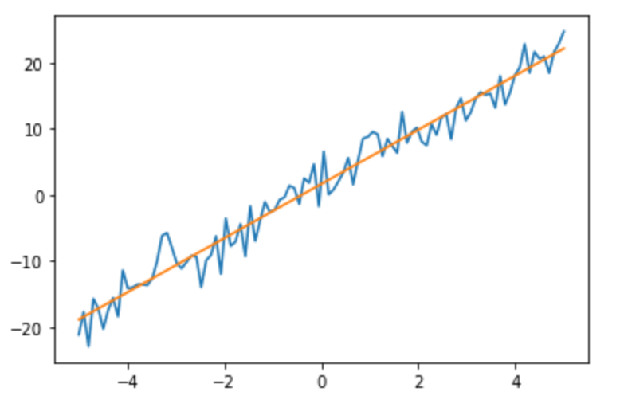

Zhen Zhou's Blog
上一讲讲的线性回归，本讲是关于多项式回归的python代码实现，多项式回归作为线性回归的一个重要组成部分，有着简单快捷，可解释性强的优点，可以拟合非线性数据，但多项式回归同样也存在需要先验知识，也就是需要设置变量的指数，也存在过拟合的问题。
2021-10-11



给毫无基础的同学们的python学习教程，本教程不从基础出发，从项目出发，在项目中介绍python的逻辑与各种函数包，第一讲是关于相关性分析与线性回归，介绍了怎么引入数据，pandas、scipy.stats、matplotlib.pyplot、numpy等函数包的基础应用，怎么画图，也包含了基础的相关分析与线性回归的解读
2021-10-5
关于我
本人周臻，熟悉我的人喜欢叫我周至秦，生于上个世纪末一个江南小城，浑浑噩噩度过了二十有三的光阴，有道是“敌视现实，虚构远方，东张西望，一无所长，四体不勤，五谷不分，文不能测字，武不能防身”。
求学于江城南湖畔，目前辗转越洋漂亮国读研，本科计算数学，硕士统计。五分钟热度选手，会一点matlab、python、R，写一点latex，碰上有趣的偶尔建立建立模型，摆弄摆弄代码，谨以此个人网页记录学习生活，以求不至于被我那健忘的脑袋忘喽。
Contact Me
zhenz5@illinois.edu zhouzhen20210601@163.com
Champaign, US Liyang, China
86-15623301327 1-2172000921